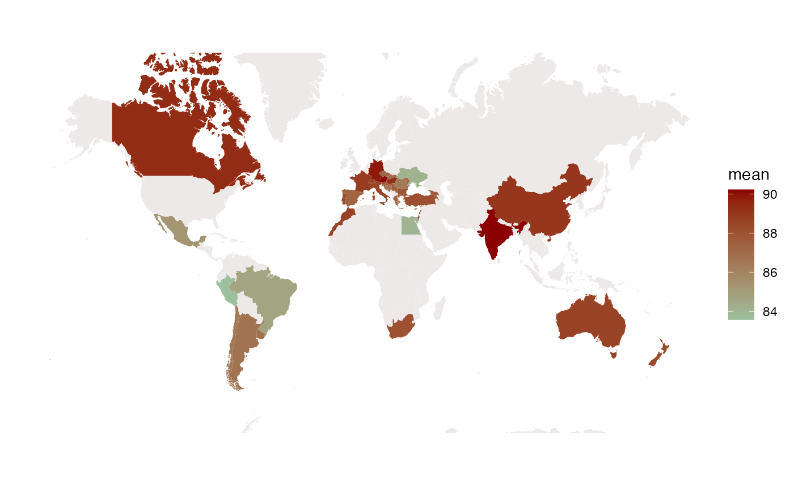
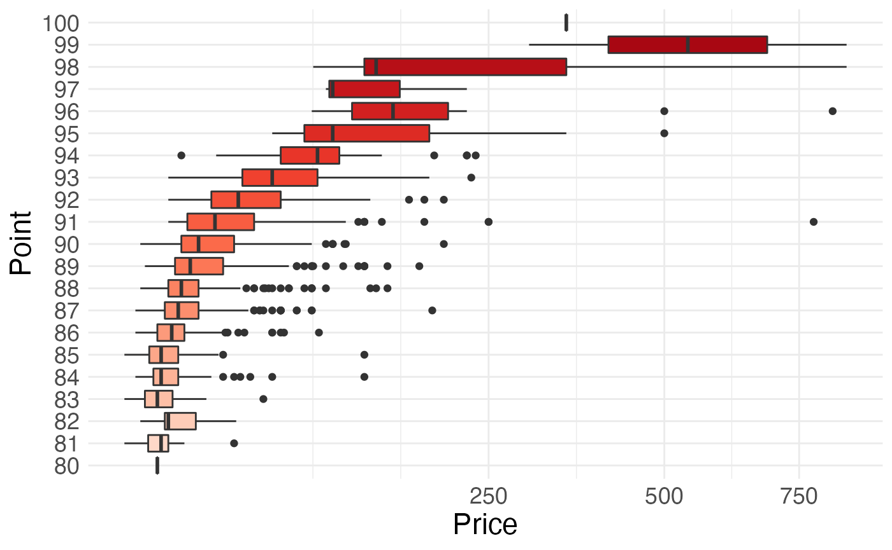
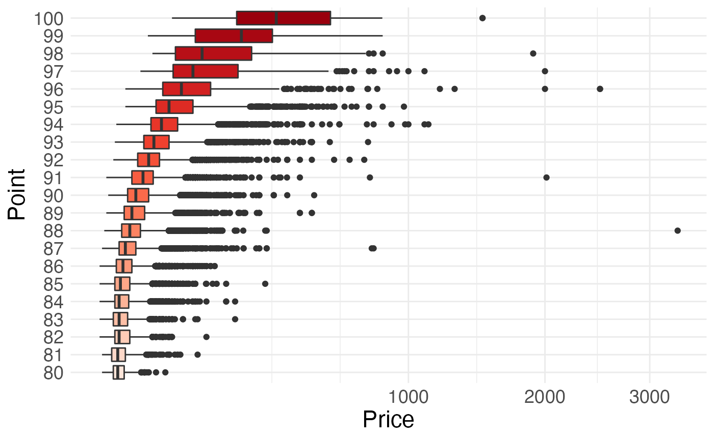

Guide
Guide.RmdThis package theme is derived from a dataset of wine enthusiast ratings used to provide users (wine buyers) with purchase decisions that maximize satisfaction/cost. This dataset is provided by Kaggle and it can be found here.
This vignette shows you how to see the average points and average prices of wines from different countries, calls a function that shows a box plot about the relationship between wine prices and points, calls a function that shows a wordcloud plot about the wine descriptions, and launches my shiny app using the wine package.
Load the wine package using the library()
function.
Data Description
In order to use the functions in the wine package, a
built-in dataset wine is required.
The dataset “wine” contains only four of the variables: country, points, price and description.
str(wine::wine)
#> tibble [129,971 × 4] (S3: tbl_df/tbl/data.frame)
#> $ country : chr [1:129971] "Italy" "Portugal" "US" "US" ...
#> $ points : num [1:129971] 87 87 87 87 87 87 87 87 87 87 ...
#> $ price : num [1:129971] NA 15 14 13 65 15 16 24 12 27 ...
#> $ description: chr [1:129971] "Aromas include tropical fruit, broom, brimstone and dried herb. The palate isn't overly expressive, offering un"| __truncated__ "This is ripe and fruity, a wine that is smooth while still structured. Firm tannins are filled out with juicy r"| __truncated__ "Tart and snappy, the flavors of lime flesh and rind dominate. Some green pineapple pokes through, with crisp ac"| __truncated__ "Pineapple rind, lemon pith and orange blossom start off the aromas. The palate is a bit more opulent, with note"| __truncated__ ...For more details about this dataset, you can use the function
?wine::wine
Wine point and price
**point_price() is the main function of
wine package.
Example
You can enter a country name directly into the function to see the average point and average price for that country’s wines.
point_price("US")
#> # A tibble: 1 × 4
#> country mean_point mean_price total_wines
#> <chr> <dbl> <dbl> <int>
#> 1 US 88.6 36.6 43If you enter an incorrect country or if the dataset does not contain data for that country, the following prompt will appear:
point_price("world")
#> [1] "Sorry, there is no information about the wines of this country available here."Data Overview
To more accurately visualize the average wine point rankings for each
country, I use the map_data dataset to create a world map
of the average wine points for each country.
wine %>%
filter(!is.na(country)) %>%
group_by(country) %>%
summarise(mean = mean(points, na.rm = TRUE),
total_wine = n()) %>%
right_join(map_data("world"),
by = c("country" = "region")) %>%
ggplot(mapping = aes(x = long,
y = lat,
group = group)) +
geom_polygon(aes(fill = mean)) +
scale_fill_continuous(low = "#9DBF9E",
high = "darkred",
na.value = "snow2") +
coord_map(xlim = c(-180, 180),
ylim = c(-60, 80)) +
theme(axis.title.x = element_blank(),
axis.text.x = element_blank(),
axis.ticks.x = element_blank(),
axis.title.y = element_blank(),
axis.text.y = element_blank(),
axis.ticks.y = element_blank(),
panel.background = element_rect(fill = "white"))
The map shows that some European countries produce wines that are favored, and that Canada, India, China and Australia have good average points for their wines.
Wine Box Plot
**boxPlot() is the main function of wine
package.
Example
You can see the box plot of wine points and prices for each country by typing the name of the country into the function.
boxPlot("Australia")
If you enter an incorrect country or if the dataset does not contain
data for that country, boxPlot() will draw a box plot with
the points and prices of wine for all countries as data, it will look
like this:
boxPlot("au")
For more details about this function, you can use the function
?wine::boxPlot
Wine wordcloud plot
**wordcloud() is the main function of wine
package.
Example
You can type a country into the function and it will draw a wordcloud plot about wine descriptions for this country.
wordcloud("Canada")If you enter an incorrect country or if the dataset does not contain
data for that country, wordcloud() will draw a wordcloud
plot with all wine descriptions.
For more details about this function, you can use the function
?wine::wordcloud
Wine shiny app
**myapp() is a function of wine
package.
Example
You can view the shiny app on the wine dataset by directly running the following code, which includes point plot, column plot, box plot and wordcloud, which will help you to understand the information about wine points, prices and descriptions in the wine dataset.
myapp()For more details about this function, you can use the function
?wine::myapp